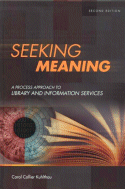

|  |
| About IR |
| Editors |
| Author instructions |
| Copyright |
| Author index |
| Subject index |
| Search |
| Reviews |
| Register |
| Home |
Kuhlthau, C.C. Seeking meaning: a process approach to library and information services. 2nd. ed. Westport, CT: Libraries Unlimited, 2004
The first edition of this book was published ten years ago and rapidly become something of a classic in the field of information seeking behaviour. It is good to see the second edition which incorporates not only the work the author has done since 1993, but also related work by other researchers.
Kuhlthau is one of the most cited authors in the field and her model of the information search process, involving stages in the search and associated feelings, has been used by others in a variety of contexts. However, what makes this book different (as was the case with the first edition) is the author's dedication to the field of practice and the book's sub-title demonstrates her commitment to the transfer of research. In Kuhlthau's case this is the practice of the school library media specialist, but her research has covered students of various ages as well as a wide range of occupational groups.
Because the information search model is so well known, I shall concentrate in this review on the relationship between the research findings and practice. It is necessary, however, to begin with the search process model, because this is central. Briefly, the model proposes that the searcher goes through the stages of initiation, selection, exploration, formulation, collection and presentation, and, at each stage, experiences various feelings ranging from optimism and satisfaction to confusion and disappointment. Personally, I occasionally suffer despair, but perhaps that is too extreme for most!
It is important to understand the origins of Kuhlthau's ideas in the work of the educational theorists, Dewey, Kelly and Bruner. Putting the matter in a rather simplistic manner, Dewey identified stages of cognition, Kelly attached the idea of feelings being associated with cognitive stages, and Bruner added the notion of actions associated with both. We can see this framework underlying Kuhlthau's research in her description of the actions undertaken at different stages in the search process and the associated feelings.
Central to the transfer of these ideas to practice is the notion of the 'Zone of Intervention' or the point at which an information seeker can proceed more effectively with assistance than without. Kuhlthau identifies five intervention zones, the first of which involves intervention by the information seeker him/herself. The remaining four involve interventions of different kinds, which the author distinguishes according to the level of mediation required: zone 2 involves the librarian as 'locater', i.e., providing the quick reference response; zone 3, as 'identifier', i.e., discovering potentially useful information resources, but taking no further interest in the user; zone 4 as 'advisor', i.e., not only identifying possibly helpful resources, but guiding the user through them, and zone 5 as 'counsellor', which might be seen as a more intensive version of the advisor, guiding not simply on the sources, but also on the overall process, through a continuing interaction with the user.
Clearly, these processes can be used in workshops, conference presentations and the classroom to sensitise the practioner and the student to the range of helping strategies that ought to be made available to the information seeker. However, the author goes further, identifying a further set of strategies for intervening in the search process, which she describes as 'collaborating', 'continuing', 'choosing', 'charting', 'conversing' and 'composing'. 'Collaboration' clearly involves the participation of others - fellow students, work peers, fellow researchers, or whatever, in the search process; 'continuing' intervention is associated with information seeking that involves a succession of actions - the intermediary 'stays with' the searcher throughout the process, available as needed to support him/her; 'choosing', that is, enabling the information seeker to identify the available choices in any given situation; 'charting' involves presenting a graphic illustration of the overall process and locating the information seeker in that chart; 'conversing' is the encouragement of discussion about the problem(s), and 'composing' involves the librarian as counsellor in encouraging the information seeker to document his/her experience, perhaps by keeping a diary of the process.
Together with the zones of intervention, these ideas, and others set out in the book, provide a very powerful didactic mechanism for improving library and information service delivery. Of course, other things are necessary - the motivation to work in this way, and the availability resources to enable its accomplishment. Sadly, at least in the UK, many libraries today are too financially pressed to do much more than the minimum helpful intervention in the information seeking process. However, that should not serve as a stick with which to beat the author: not only has she performed work of genuine significance in the field of human information behaviour, she has demonstrated beyond question that the ideas that have emerged from her research have the capability to help to deliver more effective services.
Professor T.D. Wilson
Editor-in-Chief
How to cite this review
Wilson, T.D. (2004) Review of: Kuhlthau, C.C. Seeking meaning: a process approach to library and information services. 2nd. ed. Westport, CT: Libraries Unlimited, 2004. Information Research, 9(3), review no. R129 [Available at: http://informationr.net/ir/reviews/revs129.html]